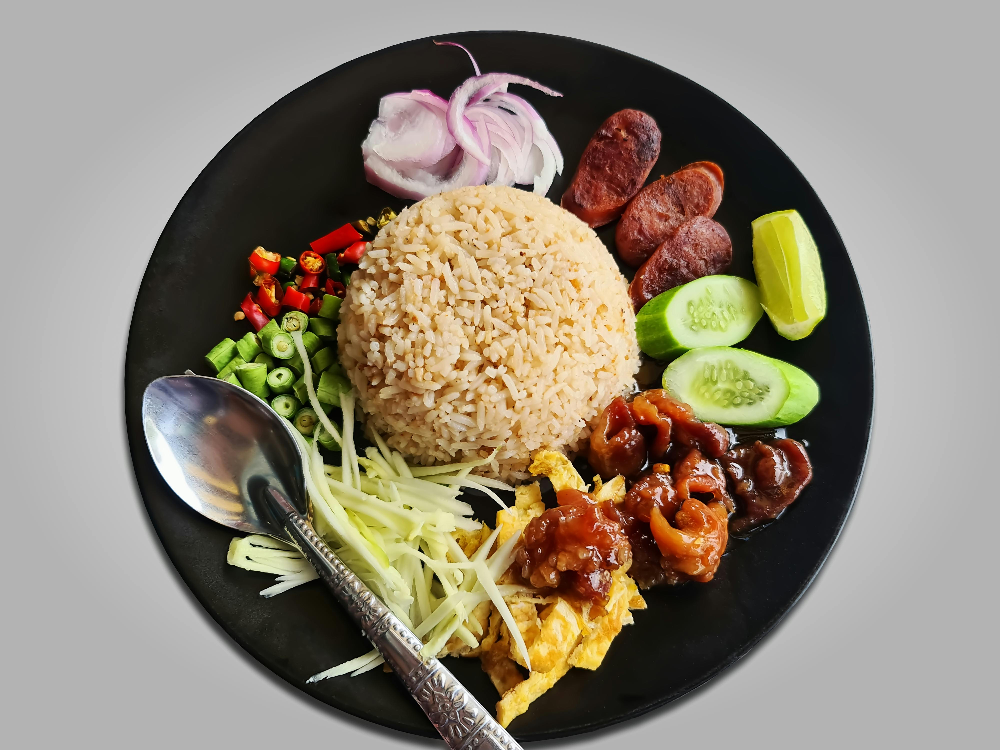
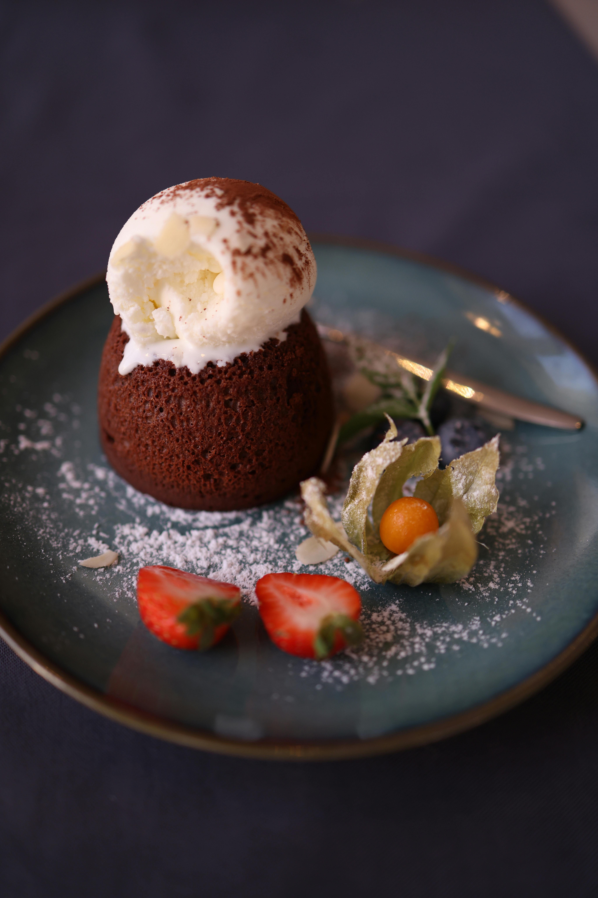

YUMMY
FOODS
Welcome to Yummy Foods
"The moment it touches your tongue, the flavors dance — rich, warm, and unforgettable. This isn’t just food; it’s a feeling you’ll crave again and again."
|
AweSome Taste
|

Awesome Ingredients
|
Delicious food starts with amazing ingredients—vibrant vegetables, aromatic herbs, and perfectly seasoned proteins. It's the balance of flavor, texture, and freshness that makes each bite unforgettable. Great meals aren’t just cooked; they are crafted with passion and purpose.
Burgers Collection Bonanza
A great burger is the perfect balance of juicy meat, melted cheese, and fresh toppings stacked between a soft, toasted bun. Each bite bursts with flavor—from the savory patty to the crisp lettuce and tangy sauce. It's comfort food at its finest, satisfying and endlessly customizable.

Burger One
|

Burger Two
|

Burger Three
|

Burger Four
|
Burgers can be grilled, fried, or even baked, depending on the recipe. They are usually served with fries and a cold drink, making a complete meal. Burgers are easy to carry and fun to eat, which is why they are popular everywhere.
Fire and Ice with our Fries
Experience the thrill of Fire and Ice with our fries!Crispy, golden fries meet a spicy kick and a cool, creamy finish for the perfect flavor balance. One bite, and you're hooked on the heat-meets-chill sensation.

Fries One
|
Fries Two
|

Fries Three
|

Fries Four
|
Fry recipies are a flavorful way to enjoy a variety of ingredients like potatoes, chicken, fish, or vegetables. From crispy French fries to golden fried chicken or spicy pakoras, they offer endless variety. These dishes are typically deep-fried or air-fried and served hot with dips or sauces.
Eat Healthy And Stay Healthy
Eating healthy helps your body stay strong and full of energy. Choosing fruits, vegetables, whole grains, and lean proteins keeps you fit and active. When you eat healthy, you feel better and can live a longer, happier life.A healthy diet gives you more energy, helps you focus, and keeps your body working well. When you eat healthy, you’re more likely to stay healthy.

Healthy One
|
Healthy Two
|

Healthy Three
|

Healthy Four
|
Eating healthy keeps your body strong and full of energy. It helps prevent sickness and supports a better lifestyle. Good food choices lead to a happy and healthy life.
Do Google And Eat Noodles
Noodles, with their golden strands, dance in swirling steam like whispers rising from a warm embrace. Each bite carries the richness of spice, the softness of comfort, and the quiet joy of something familiar. In their gentle warmth, both hunger and heart find a place to rest.

Noodle One
|
Noodle Two
|

Noodle Three
|

Noodle Four
|
Noodles are a popular comfort food enjoyed in many cultures around the world. They can be boiled, stir-fried, or served in soups with a variety of flavors and toppings. Quick to cook and endlessly versatile, noodles are perfect for any meal.
Enjoy the Desserts
Desserts are sweet whispers that dance upon the tongue, weaving moments of joy with every bite. Each layer, a delicate embrace of love and flavor, turning simple meals into memories. They brighten our days, painting smiles with their gentle sweetness and endless charm.
|

Dessert One
|

Dessert Two
|
Dessert Three
|
Dessert Four
|
Desserts are sweet treats enjoyed at the end of a meal, ranging from cakes and pastries to puddings and ice cream. They often bring comfort and joy, making special occasions more memorable. With endless flavor combinations, desserts cater to every taste and preference.
Copyright © 2025 Yummy Foods
All Rights Reserved
Developed and Maintained ByKavya Pappula